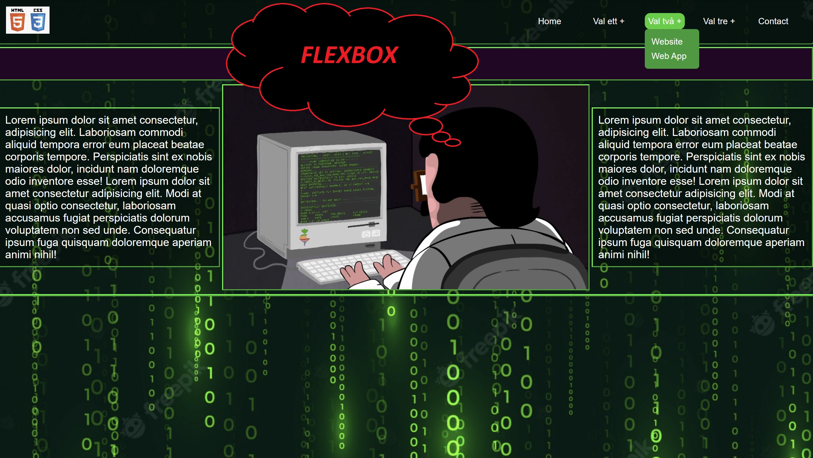
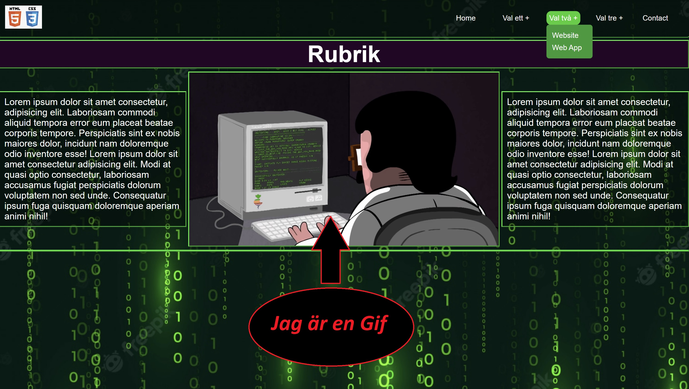
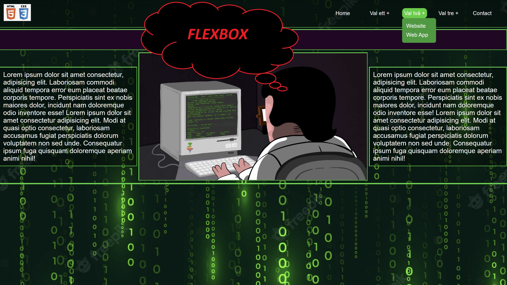
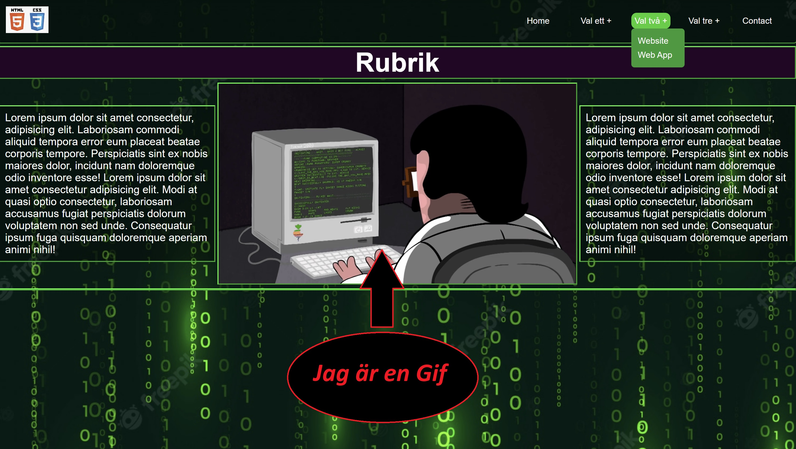

Projekt-1

I detta projektet har jag provat mig fram med att få till en navbar med“dropdown” meny som kan ses i bild nr.1. Till layout så har jag använt flexbox som kan ses i bild.2. Har även använt en Gif för att få lite dynamik i hemsidan. Bilden ligger egentligen sist men har använt mig av “order” för att få den till att hamna i mitten.
 


